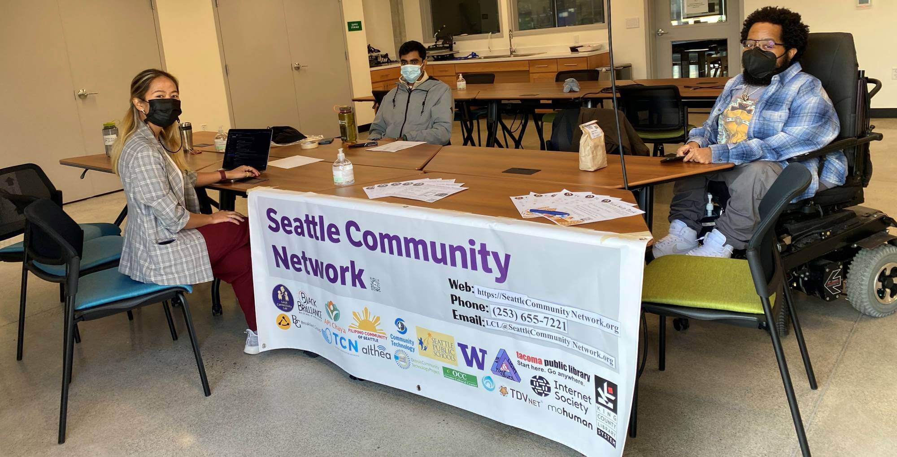
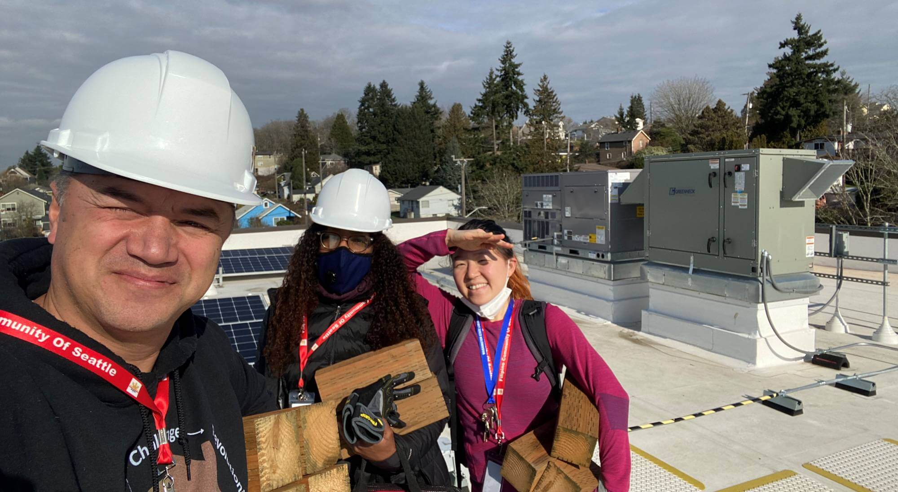
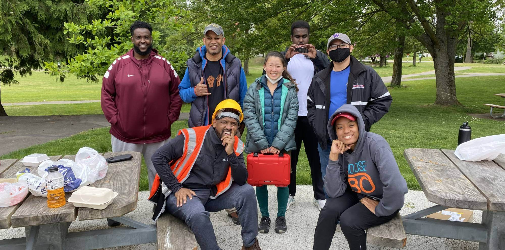

Local Connectivity Lab
The Seattle Community Network began in 2019 as a project of the Local Connectivity Lab (LCL), a 501(c)(3) registered non-profit that develops and deploys open source cellular network technologies to help people run their own community networks. LCL works in partnership with the University of Washington (UW) to share free or low-cost broadband access in higher-need areas throughout the city, making use of existing city network infrastructure such as buildings and fiber-optic cables to extend coverage to more people. Our mission is to facilitate community focused technology development and research in support of low-income, marginalized populations and groups. See our most recent blog post for the latest updates!
Mission
LCL seeks to democratize knowledge, skills, and resources to enable people to establish and run their own local, community-centered, and community-owned Internet access networks and digital infrastructure.
Mission
We envision a world where no one is excluded from access to the Internet, and where anyone can achieve the expertise and capability to bring communications infrastructure to their community and improve their quality of life.
Values
We value the ability to access the Internet and all public information and digital resources therein as a human right.
- Digital privacy of our users and partner organizations
- Collaboration, especially with the communities and organizations we work with
- Care, consideration, allyship, and peer mentorship between individuals within our organization
- Education, sharing, and capacity-building- emphasize teaching and dissemination of information and skills
- Openness, transparency, and accountability of our organization and its processes
- Democratization and inclusiveness of decision processes among stakeholders
- Long-term sustainability of our technology deployments and community structures
- Equity in planning for resource allocation, programming, and contribution